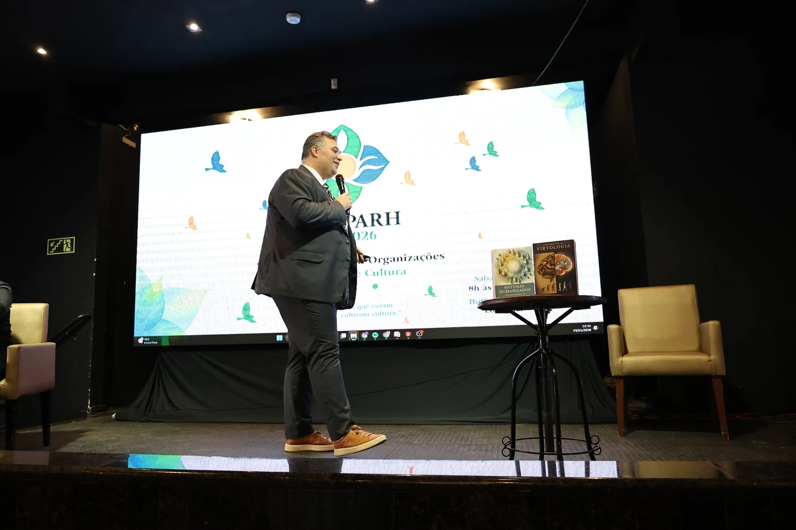
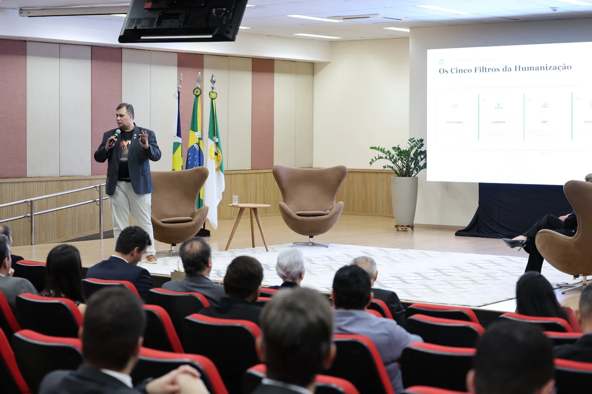
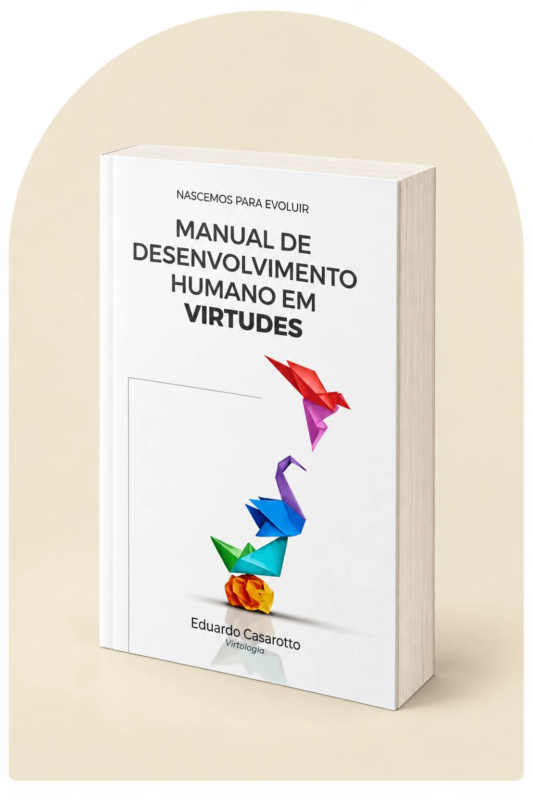
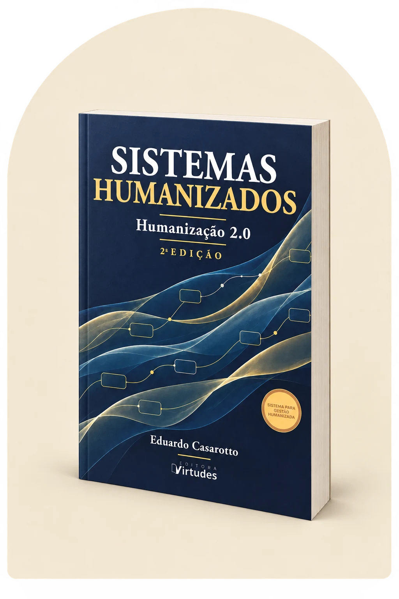

Necessidades e personalidade
A leitura do indivíduo considera o que o move e a estrutura com que ele percebe e responde às experiências.

A Virtologia é a escola clínico-filosófica brasileira fundamentada por Eduardo Casarotto. Sua matriz descreve o ser humano em sua integralidade: necessidades, personalidade, percepção, reação, graus de consciência e desenvolvimento das virtudes.
Nessa arquitetura, a virtude é uma disposição de resposta consolidada em memória de longo prazo. Os protocolos de neuroplasticidade articulam prática estruturada, repetição espaçada e aplicação em situações reais.
No Humanar, esse conhecimento sustenta os percursos educativos e de desenvolvimento humano dos projetos.
A leitura do indivíduo considera o que o move e a estrutura com que ele percebe e responde às experiências.
O trabalho se dirige à forma como a pessoa processa o que acontece e à resposta que consegue produzir.
A matriz descreve graus de estruturação da consciência que orientam a leitura do indivíduo e o percurso de desenvolvimento.
A Virtologia descreve o SNO e o SNE como sistemas neurofuncionais ligados à posição relativa e à prioridade do próprio interesse.
Conhecimento, habilidade e atitude se articulam para que o aprendizado possa se tornar prática.
Os protocolos organizam repetição, espaçamento, exercícios e acompanhamento do percurso.
A Humanização 2.0 desenvolve o estudo da relação entre o funcionamento humano e os ambientes em que ele é exigido. Seu objeto alcança as necessidades, a personalidade, os limites e as condições de participação das pessoas em cada sistema.
Sistemas Humanizados são a aplicação desse conhecimento em normas, políticas, processos e estruturas de governança. A dignidade humana ganha continuidade nas regras e nas decisões institucionais.
Esse olhar orienta o Humanar na aproximação com instituições e comunidades, incluindo quem vive e quem trabalha no sistema penitenciário.
Conheça as ações e cooperações
Perguntas para examinar a estrutura de uma instituição, uma regra ou um processo.
Considera o outro, suas necessidades e o bem comum?
Está incorporado às regras, aos processos e à rotina?
Alcança todas as pessoas afetadas, inclusive quem trabalha no sistema?
Respeita diferentes necessidades e situações sem perder seu propósito?
Distribui participação e responsabilidades entre os envolvidos?
Eduardo Casarotto
A matriz da Virtologia e seus fundamentos.
Conheça o livro
Eduardo Casarotto
Estudo e prática das 33 virtudes.
Conheça o livro
Eduardo Casarotto
Funcionamento humano e humanização das instituições.
Conheça o livroAutoria: Eduardo Casarotto. As obras preservam suas identificações editoriais e institucionais.